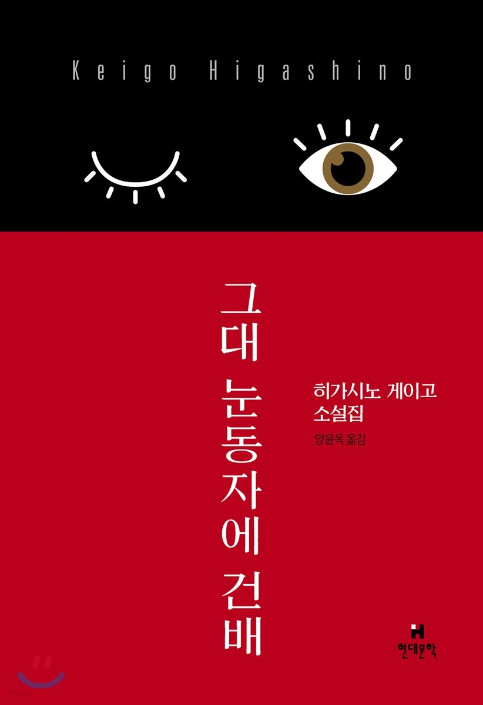
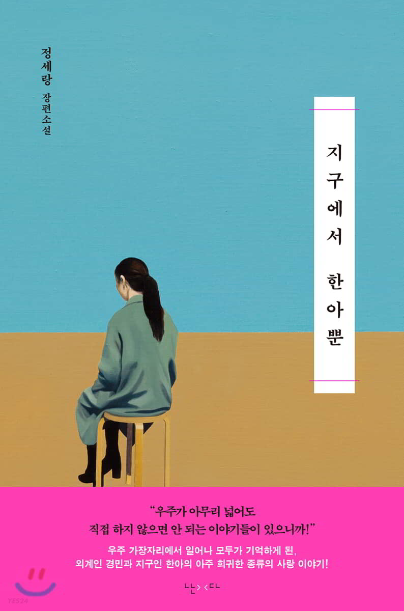
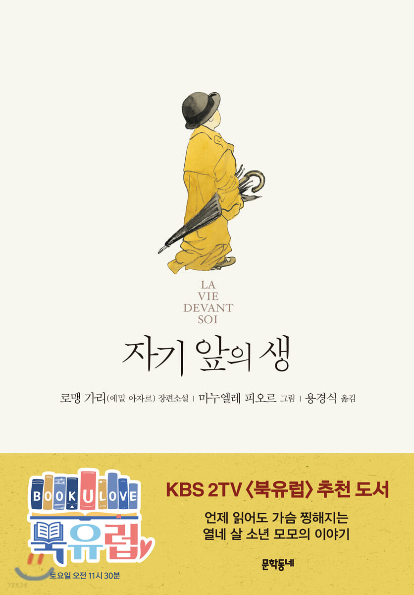

노동하는 작가이자 독자가 만들어 낸 작가, 김동식
노동의 고독을 승화하여 써내려간 뜨거운 소설!
우리의 상식을 두드리는 묵직한 거짓말
노동하는 작가이자 독자가 만들어 낸 작가, 김동식
노동의 고독을 승화하여 써내려간 뜨거운 소설!
우리의 상식을 두드리는 묵직한 거짓말

유머와 페이소스, 짜릿함 넘치는 아홉 편의 이야기
이제 히가시노 게이고는 하나의 장르다!

직접 하지 않으면 안되는 이야기들이 있으니까!"
우주 가장자리에서 일어나 모두가 기억하게 된,
외계인 경민과 지구인 한아의 아주 희귀한 종류의 사랑 이야기!

사랑을 주고받는 모모의 모습은 많은 이에게 크나큰 감동을 주었다.
사람은 사랑 없이 살 수 없다. 그렇다, 우리 모두 사랑해야 한다.
모모가 깨우치는 그 경이로운 생의 비밀을 만나러 가보자.